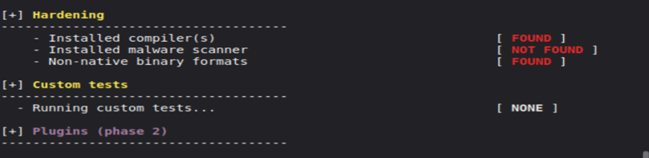
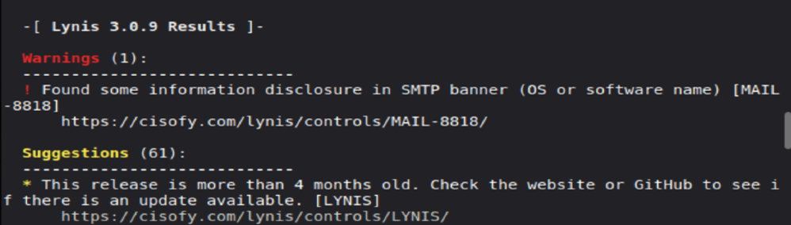
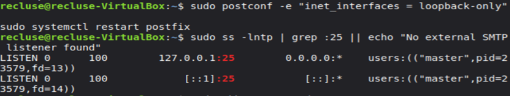
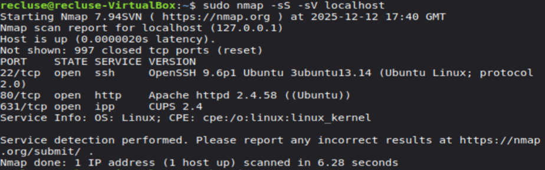
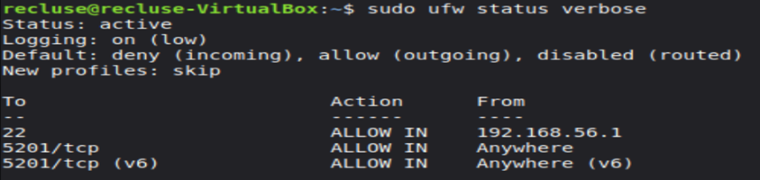
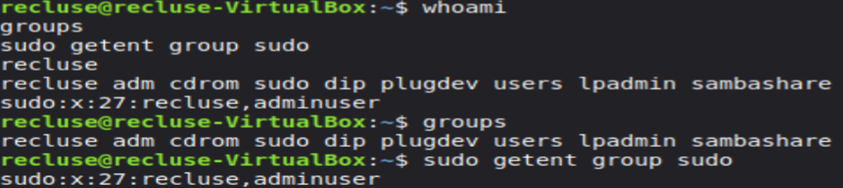
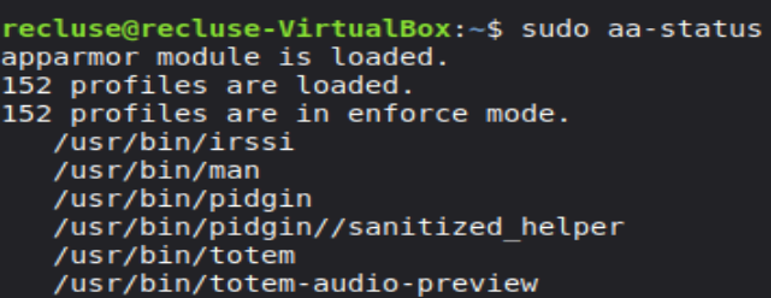

This week focused on validating the system’s security posture after implementing controls. I verified the firewall configuration, checked mandatory access control status, confirmed active services, and used auditing/scanning tools (Lynis, Nmap, and rkhunter) to identify remaining issues and confirm the attack surface was minimized.
lynishardening.png — Lynis hardening audit results used to assess security posture after applying controls.
psotlyniswarnings.png — Post-Lynis warnings/suggestions output used to identify remaining security gaps and improvements.
loopbacklynischeck.png — Lynis check confirming local/loopback networking configuration was detected during auditing.
nmapscan.png — Nmap port scan results showing exposed/listening ports after hardening (attack surface validation).
sudoufwverbose.png — UFW verbose status confirming firewall is enabled and rules are applied correctly.
whoamigroupcommands.png — User identity and group membership evidence supporting least-privilege configuration.
scsystemctlunitscheck.png — systemctl unit/service check confirming only required services are enabled/running.

sudoaastatus7.png — AppArmor status output confirming profiles are loaded and enforcement state.
rkhunterpopupd.png — rkhunter scan output used to check for rootkits or suspicious modifications.